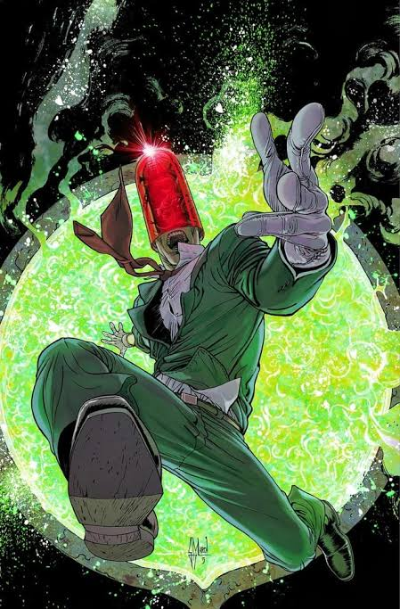
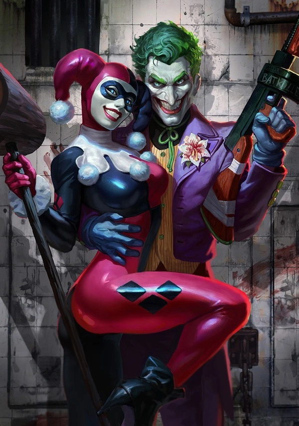
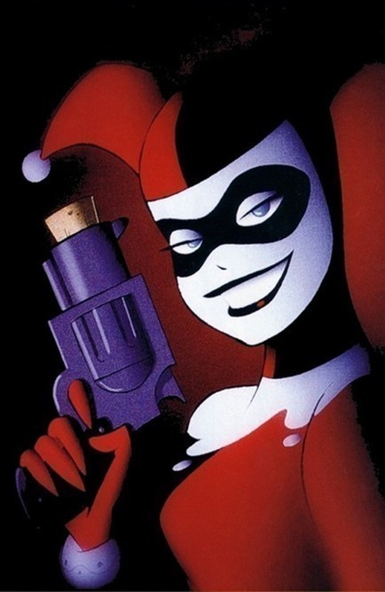
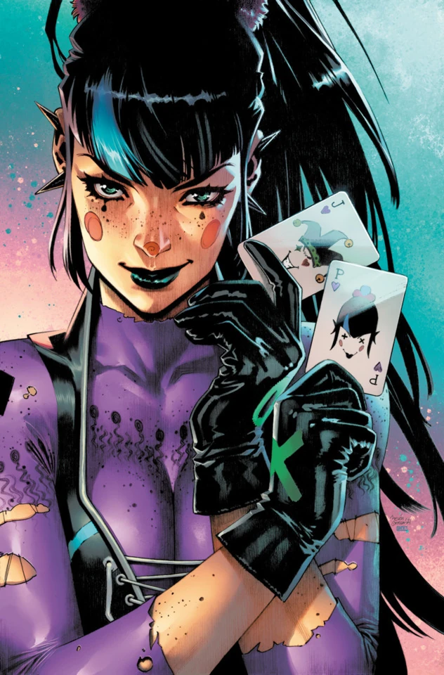
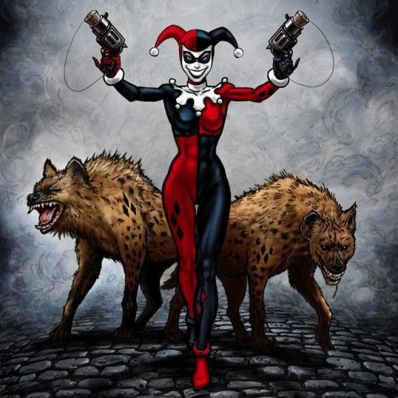
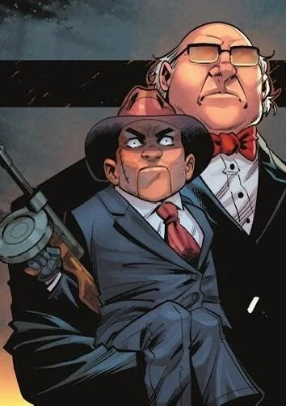
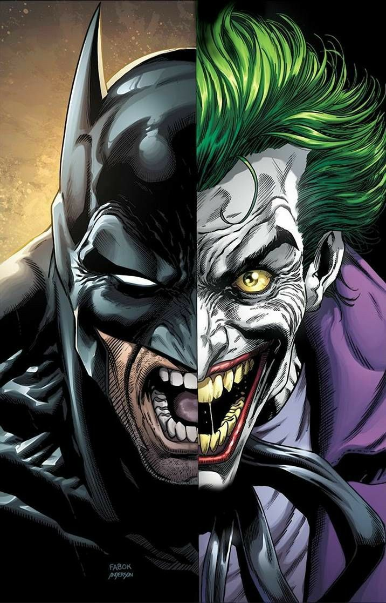

QUEM ELE É
O Coringa é o vilão mais imprevisível e perigoso de Gotham City. Sem nome verdadeiro confirmado, sem passado definido e sem um objetivo financeiro tradicional, seu único propósito é provar que a ordem humana é uma ilusão e espalhar o caos absoluto.

O ACIDENTE NA ACE CHEMICALS
Segundo uma de suas origens mais conhecidas (A Piada Mortal), ele era um comediante fracassado que aceitou participar de um assalto vestido como Capuz Vermelho. Ao ser encurralado pelo Batman, caiu em um tanque de produtos químicos. O resultado: pele branca como giz, cabelos verde-neon, lábios carmesim e uma loucura irreversível.

ARLEQUINA & O CORINGA
Dra. Harleen Quinzel era uma psiquiatra promissora no Asilo Arkham encarregada de analisar o Coringa. Em vez de curá-lo, ela se apaixonou obsessivamente por sua mente perturbada. Ele a manipulou para ajudá-lo a escapar, transformando-a na lendária Arlequina.
Juntos, formaram o casal mais insano dos quadrinhos, vivendo uma relação tóxica, explosiva e recheada de crimes glamourosos por toda Gotham City.
ALIADOS DO CAOS
Conheça os cúmplices, capangas e parceiros do Príncipe Palhaço do Crime:
-

ARLEQUINA ';"> Arlequina Sua parceira mais icônica e leal por anos, especialista em acrobacias, combate e marretadas imprevisíveis. -

PUNCHLINE ';"> Punchline A nova braço-direito do Coringa. Uma sociopata fria, calculista e mestra em venenos e tecnologia. -

BUD & LOU ';"> Bud & Lou (As Hienas) Duas hienas ridentes e ferozes mantidas pelo Coringa e Arlequina para aterrorizar invasores e inimigos. -
 O Charada
Parceiro intelectual em grandes esquemas e guerras de gangues em Gotham, desafiando a mente do Batman.
O Charada
Parceiro intelectual em grandes esquemas e guerras de gangues em Gotham, desafiando a mente do Batman.
-

SCARFACE ';"> Ventríloquo & Scarface Aliados recorrentes no submundo de Gotham que frequentemente unem forças com o Coringa para grandes assaltos. -
 Killer Croc
Contratado frequentemente pelo Coringa para atuar como força bruta implacável contra o Batman.
Killer Croc
Contratado frequentemente pelo Coringa para atuar como força bruta implacável contra o Batman.

BATMAN VS CORINGA
Eles são os dois lados da mesma moeda obsessiva. O Batman representa a ordem rígida nascida do trauma; o Coringa representa o caos absoluto nascido do absurdo da vida.
O Coringa não quer matar o Batman, pois sem o morcego sua vida não tem graça. Ele vive para tentar quebrar a única regra do Homem-Morcego: não matar.
"POR QUE TÃO SÉRIO?"
O CAOS É A ÚNICA ESCOLHA VERDADEIRA.